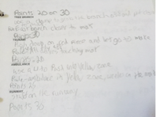
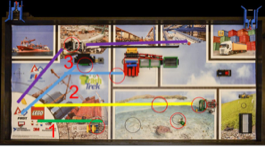
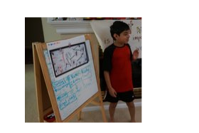

| Page 1 |


Coach’s Corner

Developing a Mission Strategy
By Arvind & Sanjay Seshan
One of the first tasks you will complete as a team is to decide on a mission strategy. The mission strategy
will determine the robot’s design as well as determine many programming strategies. Here is what we
recommend for our team.
Coaches for Animatronics
(Pennsylvania, USA)
Step 1. Taking Notes. Every student on the team should read the
Challenge release document to understand the missions, rules, and points.
Watching the challenge release video is not enough. Students can use
Post-its, notecards or any technique to take notes about each mission.

Capture the goal specifics rules about the mission as well as the points.
Rookie Tip: Check back for rule updates during the season.
Step 2: Assigning a Difficulty Level. Students need to determine how
easy or hard a mission might be. Here are some questions that will help them: Is the model easy or hard
to activate? Is the model near base of far away from base? Traveling to the other end of the table requires
time and greater accuracy.
Step 3: Developing a Mission Strategy. Each student should

Interactive Sketch Planner
next decide on which missions the team should work on and in

available on
EV3Lessons.com
.
what order. Have the students consider points you get, the
difficulty level, and the mission location on the challenge mat.
For this task, use the Interactive Sketch Planner, Online Scorer
and Strategy Worksheet on EV3Lessons.com.
For example, have the students think of zones on the challenge
mat to help them group missions into runs (outings with multiple
missions). Zones indicate missions that could be done on the
same run and could even indicate distance and/or difficulty. In the
example on the right, missions in the green zone are relatively
easy and close by. Red is harder to get to and will take more time.
Students can document their strategy in a number of ways. In the


examples on the right, one student chose to use colored lines (one
per run) and the other used text.

Step 4: Present to teammates. Finally, we ask every team

member to come up with their own strategy and present their
ideas to the team. The team members will listen, give feedback,
and then come up with one team strategy that incorporates ideas from all the members.
Photo Credit: Iona Primary
Tips for the team:
1) You don’t have to complete all the missions on the table to “do well,” “feel accomplished,” or “win a prize”. For rookie teams, start closer to base and on
the easier missions. Often, completing the missions closer to base reliably can yield more points than a team that tries to complete mission on the far end of
the table unreliably. The team will also become more confident with early successes. The goal is not to complete all missions, but to pick and choose the ones
you can do successfully in 2.5mins.
2) Your team’s strategy can change during the season. As the team builds and programs, you might discover ways to combine two missions you didn’t think
of before. You might discover a new or easier path for their robot. Always stay flexible.

3) Now that the team has a strategy, you can now decide what sensors you need and where the sensors and motors should be placed on the robot.